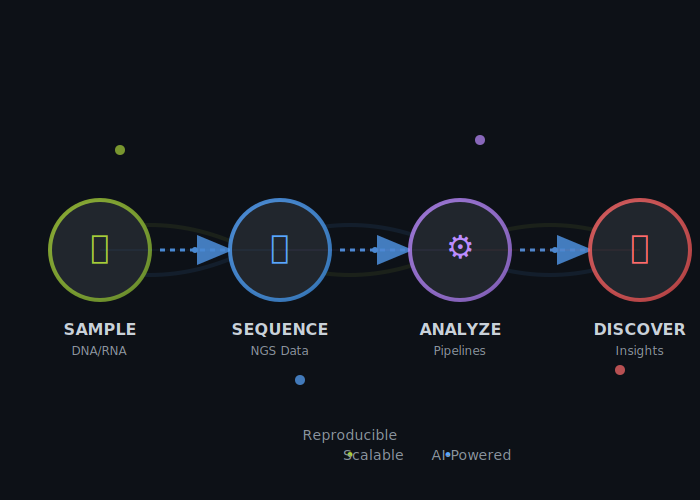

Szymon Myrta
Bioinformatics Expert | 9+ Years | NGS & AI Workflows
Transform your genomic data into actionable insights with reproducible pipelines and cutting-edge analysis.
⚡ Powered by the ACTN3 “Speed Gene” Philosophy — Fast, Efficient, High-Performance Bioinformatics
6
Publications
9+
Years Experience
500+
NGS Datasets

💡 What Problems Do I Solve?
🧬 Raw NGS Data Chaos
Problem: You have TBs of FASTQ files but no pipeline
Solution: End-to-end analysis from QC → DE → figures
Tools: Snakemake, Seurat, edgeR, HTSeqGenie
🤖 AI-Ready Genomic Data
Problem: Messy datasets, batch effects, imbalanced classes
Solution: Harmonized, ML-ready perturbation datasets
Tools: CRISPR normalization, feature engineering, CV design
📊 Publication-Quality Figures
Problem: Analysis done but figures look unprofessional
Solution: Heatmaps, UMAPs, survival curves ready for Nature/Cell
Tools: ggplot2, ComplexHeatmap, Quarto reports
🏥 Clinical Trial Biomarkers
Problem: Which patients respond to your drug?
Solution: Cox models, patient stratification, companion diagnostics
Tools: TCGA integration, survfit, pathway enrichment
🛠️ Core Services
NGS Analysis
- RNA-seq (bulk & single-cell)
- ChIP-seq, ATAC-seq
- WES/WGS variant calling
- TCR/BCR-seq repertoires
- CRISPR screen analysis
- other NGS data
Format: Quarto reports + GitHub repo
Pipeline Development
- Snakemake/Nextflow workflows
- Docker containerization
- HPC optimization
- CI/CD integration
- Custom R packages
Format: Reproducible code + documentation
AI-Powered Analysis
- ML-ready feature extraction
- Predictive modeling (drug response)
- Multi-omics integration
- LLM-assisted code generation
- Automated QC systems
Format: Trained models + deployment scripts
Interactive Dashboards
- Shiny apps for data exploration
- Real-time QC monitoring
- Client-facing visualizations
- GitHub Pages portfolios
- Quarto knowledge bases
Format: Hosted app + source code
Multi-Omics Integration
- Transcriptomics + genomics
- Spatial transcriptomics (10X Visium)
- TCGA/GEO public data mining
- Cross-species comparisons
- Pathway enrichment analysis
Format: Integrated dataset + insights report
Clinical Trial Support
- Biomarker discovery & validation
- Patient stratification algorithms
- Survival analysis (Cox models)
- Companion diagnostic development
- Regulatory-compliant documentation
Format: Clinical-grade reports + code
🎯 Technical Arsenal
🧬 Bioinformatics


Core: limma, edgeR, DESeq2, fgsea, ComplexHeatmap
Single-cell: Seurat, UMAPs, cell type annotation
CRISPR: crisprVerse, screenCounter, MAGeCK
ML: caret, PAM, consensus NMF, feature engineering
⚙️ Engineering


Pipelines: Snakemake, Nextflow, Bash scripting
Reproducibility: Quarto, Shiny, RMarkdown, literate programming
Compute: HPC clusters, parallel processing, CI/CD
Data: FASTQ/BAM/VCF parsing, dplyr, data.table
📊 Visualization


Static: ggplot2, ComplexHeatmap, volcano plots
Interactive: Shiny dashboards, plotly, custom widgets
Reports: Quarto websites, dynamic RMarkdown, GitHub Pages
🗄️ Data Sources


Public: TCGA, GEO, EGA, SRA, cBioPortal
Clinical: OAK/POPLAR trials, FoundationOne
Sequencing: Illumina (HiSeq, NovaSeq), 10X Genomics
📚 Research Impact
6
Publications in Top-Tier Journals
800+
Patient Samples Analyzed
160K
sgRNAs in CRISPR Screens
Featured Publications
🧬 Transcription factor Zfx regulates tumor immune evasion
iScience (2025)
Role: CRISPR screen analysis (160K sgRNAs), ChIP-seq, TCGA survival models
📄 Read Paper
🧬 Transcriptional subtypes in lung adenocarcinoma
Clinical Cancer Research (2021)
Role: NMF subtype discovery, 113-gene PAM classifier (87-91% accuracy)
📄 Read Paper | 💻 Code
🧬 ERBB signalling in KRAS-driven lung cancer
bioRxiv (2023)
Role: scRNA-seq analysis (10X, 22 clusters), PANTHER enrichment
📄 Read Paper